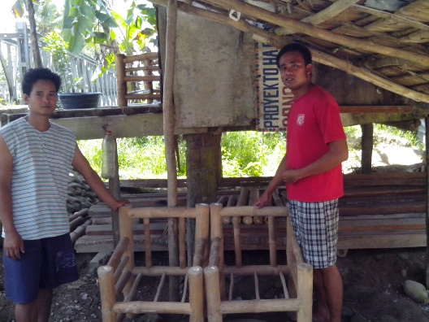
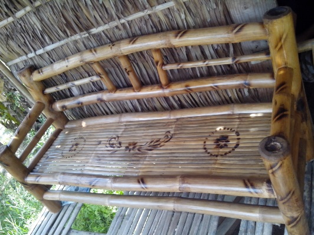

Typhoon Haiyan
One Year On
The Red Cross Red Crescent Response
Typhoon Haiyan struck the Philippines on 8 November 2013. It was the strongest typhoon to ever make landfall and the scale of devastation was without precedent. The storm affected 16 million people across a scattered archipelago of islands, each with their own challenges around access and infrastructure.
The current recovery operation of the Red Cross and Red Crescent Movement extends across a large area of five island groups. With the help of more than 8,000 community-based volunteers, we reached 1.3 million people with emergency relief. Our goal in the recovery phase is to support 500,000 of the most vulnerable people over the next three years, with a focus on safer shelter and livelihoods. One year after the typhoon, we invite you to take a closer look at the work we have been doing, and to meet some of the people who with our support are getting back on their feet.
Select a section or scroll through and access a quick navigation menu using the '☰' menu icon at the top left corner of any section.
Scroll ▼Emergency Phase
Essential items such as jerry cans and hygiene kits being distributed by the Philippine Red Cross in Isabel, near Ormoc in Leyte shortly after the typhoon hit. Photo credit: Netherlands Red Cross
A young boy holds aloft a jerry can following a relief distribution in Isabel, Leyte. Photo credit: Netherlands Red Cross
A man stands among the ruins of his home near Palo, Leyte. The typhoon destroyed or badly damaged 1.14 million homes. Photo credit: Alanah Torralba
Distribution near Carles, Iloilo on Panay Island - thousands of people in northern Panay were among those who received relief. Photo credit: Benelux Red Cross
Children in Barangay 25 in Tacloban receiving psychological support from the Philippine Red Cross in the aftermath of the typhoon using art therapy. Photo credit: Kate Marshall/IFRC
Philippine Red Cross tracing volunteers armed with satellite phones track down survivors on foot in Burauen, Leyte. Photo credit: Nichola Jones/IFRC
In Guiuan, one of the places hardest hit by Typhoon Haiyan, staff was working around the clock assessing the most pressing needs of the affected population. Photo credit: Dennis Ramos/ICRC (left), Brecht Goris/ICRC (right)
A mother stands with her family in their destroyed house moments before sunset in a desolate landscape of destroyed coconut trees outside the centre of Guiuan. The Philippine Red Cross is closely coordinating its relief response with the International Federation of Red Cross and Red Crescent Societies, the ICRC, and a number of National Societies of other countries, in responding to the humanitarian needs in the aftermath of Typhoon Haiyan. Photo credit: Olivier Matthys/ICRC
Homohon relief distribution. Photo credit: Brecht Goris/ICRC

Basey relief distribution. Photo credit: Brecht Goris/ICRC

Emergency hospital in Basey. Photo credit: Brecht Goris/ICRC
Basic health care unit in Balangiga and provision of clean drinking water through water trucking. Photo credit: Brecht Goris/ICRC
In the wake of typhoon Haiyan, the Philippine Red Cross and ICRC helped people restore contact with separated loved ones through the Restoring Family Links program. Photo credit: Brecht Goris/ICRC
Leyte Regional Prison, Abuyog, Leyte. After weeks without news, a prisoner weeps upon learning that his whole family is safe and sound in Guiuan, Eastern Samar, which was hardly hit by Typhoon Haiyan. Red Cross messages and satellite phone calls helped 120 detainees contact their relatives.
Recovery Phase
Construction of a model house in Guiuan, Eastern Samar. Photo credit: ICRC
Completed storm-resilient shelters in Salcedo, Eastern Samar. Up to 4,500 shelters will be built for families in eight municipalities in this area which is also affected by decades of armed conflict. Photo credit: Gavin Macmillan/ICRC
Shelter kits distribution in Homonhon island and hauling of shelter materials as part of the cash-for-work activities. Photo credit: Tim Stats/ICRC (left), Jesse Edep/ICRC (right)
People now have access to clean drinking water after the rehabilitation of water supply networks destroyed by Typhoon Haiyan. Photo credit: M R Hasan/ICRC
Cash grants were provided to fisher folks which they used to buy fishing boats and gears to help them rebuild their livelihoods. Photo credit: M R Hasan/ICRC
Newly constructed storm-resilient houses in Marabut. Photo credit: Henry Lu/ICRC
A woman gave birth at the Marabut Rural Health Unit (RHU), which was repaired along with other RHUs in Eastern Samar. Photo credit: ICRC/M R Hasan/ICRC
The Red Cross and Red Crescent Movement supported the rehabilitation of healthcare infrastructures such as Basey District Hospital. Photo credit: Henry Lu/ICRC
Livelihoods

Restoring assets and incomes lays a solid foundation for long-term recovery of individuals and communities through livelihood support, skills training and enterprise development. The Philippine Red Cross has been supporting vulnerable people with cash grants to replace assets and restore livelihoods to pre-disaster levels. Initially, we distributed unconditional cash to more than 91,000 households to cover their immediate needs. Now we are supporting more sustainable solutions to help these families get back on their feet.
Scroll ▼Maria
Mother of two Maria Redubla Liporada loves to make cakes, but it was only when she received about USD 130 in livelihood support from Red Cross that she was able to realise her dream to set up a small bakery.
Maria and her family live in a remote upland community in Leyte called Anonang, which was hard hit by Typhoon Haiyan.
The family was evacuated to higher ground before the typhoon to escape flooding from a nearby river. When they returned, they found their house and belongings gone and most of their crops destroyed. They had very little left to eat.
That time was tough for them all, Maria says.
‘During that time I felt a mixture of emotions. We had lost everything, but at the same time we were thankful to survive.’
Not long after that Maria’s family and some other survivors left for Manila to seek a new life. By chance they saw an interview with the Philippine Red Cross Chairman, Richard Gordon. He explained what the Red Cross was doing to distribute relief goods to people in need. That gave Maria and her family renewed hope, and they decided to return home. Once recovery work started, they were able to qualify for Red Cross livelihood support.
These days, Maria gets up at 3 every morning to make her kakanin (cakes) and sells enough to make about USD 10 a day. All the family savings go straight into the bank and will be used to rebuild their home and pay school fees.
‘I want to thank Red Cross for giving me the opportunity to start a new life and a new business,’ she says.
‘My message to other women is: don’t just sit at home – help your husband and together you will prosper.’


Gaspar
Married with four children, Gaspar Martinez is a farmer from the village (barangay) of Villa Corazon, Burauen, Leyte. Before Typhoon Haiyan, Gaspar earned about USD 18 every 40 days by selling rice, corn and root vegetables. Although he earned barely enough to meet his family’s basic needs, they were content with what they had.
Life for Gaspar and his family changed after Haiyan. Their small nipa hut (a type of stilt house common in the Philippines) was destroyed by the strong wind and their crops were ruined. They had no choice but to move into a tiny shed belonging to some other family members.
Gaspar experienced feelings of hopelessness and frustration as he tried to find ways of feeding his family. But one day he heard about household livelihood assistance from the Philippine Red Cross and thought he would apply. Gaspar and his family were selected as a beneficiary household and applied for a conditional cash grant of USD 135, which they used to start a small business buying and selling rice, vegetables and fish. Now Gaspar has no trouble providing for his family, including two children at the local high school, and is saving to rebuild the family’s small nipa hut so they can once more call it home.
Joel
Joel Cabujoc is a young entrepreneur from Barangay Santol, San Miguel, Leyte. Before Haiyan, Joel’s family had a bamboo furniture business and was doing well, making good money selling their products in a nearby market and keeping themselves well fed. But Haiyan changed all that by destroying the business. Joel and his family succumbed to feelings of deep despair. They still struggled even though Joel found work as a farmhand, working hard to provide for the family and restore their lives.
Joel successfully applied to the Philippine Red Cross for a livelihood support grant. With the USD 180 he received, Joel was able to revive the family business. Now the volume of orders enables him to make up to USD 56 a week. Every day, Joel harvests bamboo and buys materials at the local market. He has saved enough money to rebuild his house and pay a farm labourer to tend the family farm, paying the labourer with a sack of rice once the harvest is over. ‘We are happy and thankful,’ he says with pride.
 Coconut Lady
Cash relief gives Irene and family new start
Irene Collera, Candahug, Palo, Leyte
Irene, her husband Elmer and six young children fled for their lives when Typhoon Haiyan tore through their community and their house was destroyed. They ended up taking refuge on the Palo beachfront, along with hundreds of other people who had lost everything and had nowhere else to go.
But a year later, thanks to the USD 110 Philippine Red Cross emergency cash relief Irene received in February, the Colleras have bounced back. Irene has become the ‘buko shack lady’, complete with billboard and a thriving small business selling fresh coconut juice.
Irene explains that before Haiyan, many women from her community would sell sari sari (variety) goods. But very few people make a profit, because so many neighbours and friends ask for credit.
So Irene saved 1,000 pesos for house repairs and invested the rest to buy 1,200 coconuts from a passing farmer. She repeated this every week until she had saved enough to rebuild her house, setting aside enough to cover health costs and school expenses.
Life is good, she says, because now her children get enough to eat and she’s making enough to employ two helpers and open another stall.
‘My family are very happy and hopefully my business will keep growing,’ she says with a smile.
Shelter - beneficiaries contribute labour to build a home

Typhoon Haiyan damaged or destroyed well over 1 million homes. In the aftermath of Typhoon Haiyan, the Philippine Red Cross provided nearly 624,000 people with emergency shelter - nearly one quarter of the total affected households. In recovery, the core shelter target is 40,000 houses. Red Cross has so far hired and trained more than 1,800 carpenters and craftsmen to construct houses, made either of indigenous materials or with a concrete base and columns, and all based on the key shelter principles of ‘build back safer’. As far as possible, beneficiaries also contribute labour - known as sweat equity - to their own building project and in return receive commodity vouchers to exchange for food and household items.
Pictured here is a PRC/IFRC shelter construction team in Tabontabon, Leyte. The team of skilled and unskilled labourers, together with the beneficiary, take 6-8 days to complete a house. They are paid at least the minimum wage – about USD 11 for tradesmen and USD 6.70 for the unskilled.
Some labourers are direct beneficiaries of the construction projects and will move into the very shelter that is under construction. Beneficiaries who are able to are expected to contribute their own labour and employ labourers from the community to help build the house. This is called ‘sweat equity’. These beneficiaries are given commodity vouchers in exchange for labour.
Skilled labourers such as masons and carpenters are in high demand to build homes to IFRC's specifications. This is the inside of a 'core' shelter in an inland village in Leyte, The householder is also involved in the construction by contributing 'sweat equity' to the project.

Once the shelter is finished, the occupant can move in. Homes built by IFRC south of Tacloban have a concrete 'core' and timber frame, topped with high specification CGI sheets. This is one of the earliest models and the family occupying it have added on a shaded porch area complete with concrete pillars built to the same specs as the house pillars.
Films
Haiyan recovery operation: livelihoods
Reaching out
Palawan - volunteers reaching out to tribal communities
Palawan is best known as a prime tourist destination, but most visitors know nothing of the marginalised Tagbanwa tribes inhabiting some of the remote islands off Coron Town and Culion Island.
Days after Typhoon Haiyan, Philippine Red Cross mobilised staff and volunteers to drop badly need emergency supplies to the worst affected tribal islands, including the village of Banuang Daan in Coron Island and the community of Bulukbulukaan, Osmenia, two hours by boat from Culion, a former leper colony. Many residents, including the poorest fishermen and seaweed farmers, lost their homes to the fierce wind and waves and were short of food and water. Red Cross also distributed cash to 2,000 of the poorest families.
In the months that followed, Philippine Red Cross continued its regular outreach visits to check on the wellbeing of the communities as well as providing shelter repair materials. Community volunteers have been recruited to conduct workshops on hygiene promotion and building back safer.
Philippine Red Cross
Born officially in 1947, the Philippine Red Cross has truly become the premier humanitarian organization in the country, committed to provide quality life-saving services that protect the life and dignity especially of indigent Filipinos in vulnerable situations.
At present, the Philippine Red Cross provides six major services: Blood Services, Disaster Management Services, Safety Services, Health Services, Social Services, Red Cross Youth and Volunteer Services. All of them embody the fundamental principles of the International Red Cross and Red Crescent Movement – humanity, impartiality, neutrality, independence, voluntary service, unity and universality. These values guide and inspire all Red Cross staff and volunteers, to whom being a Red Crosser is more than just a philosophy but a way of life.
The Philippine Red Cross takes pride in urging all Filipinos to take part in the heroism of the Philippine Red Cross by becoming a full-fledged member, volunteer, or donor. For more information, please visit the Philippine Red Cross website.
International Red Cross and Red Crescent Movement
The International Red Cross and Red Crescent Movement is the world's largest humanitarian network. The Movement is neutral and impartial, and provides protection and assistance to people affected by disasters and conflicts. The Movement is made up of nearly 100 million members, volunteers and supporters in 189 National Societies. It has three main components:
- The International Committee of the Red Cross (ICRC)
- The International Federation of Red Cross and Red Crescent Societies (IFRC)
- 189 member Red Cross and Red Crescent Societies
As partners, the different members of the Movement support communities in becoming stronger and safer through a variety of development projects and humanitarian activities. The Movement also works in cooperation with governments, donors and other aid organizations to assist vulnerable people around the world.